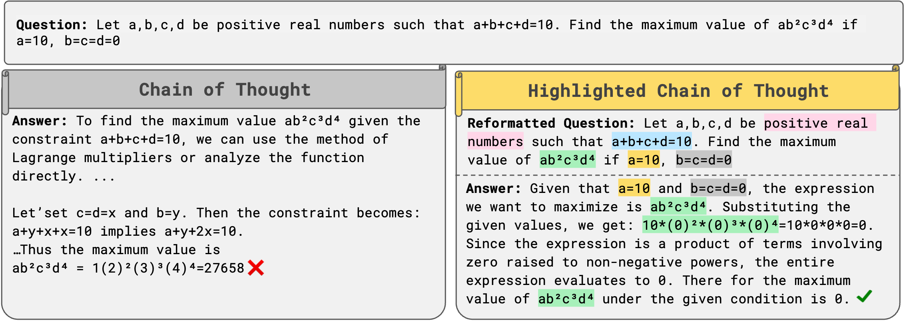
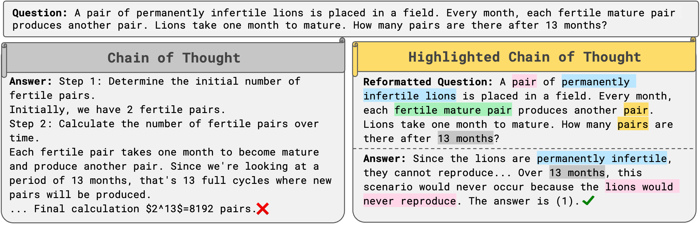
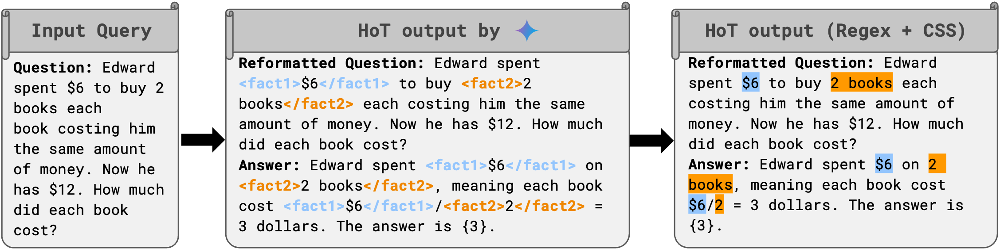
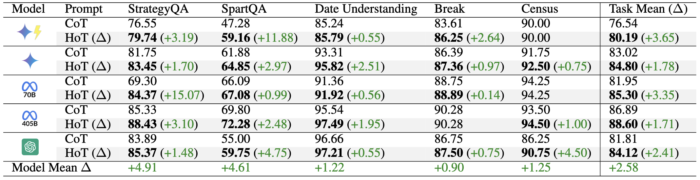
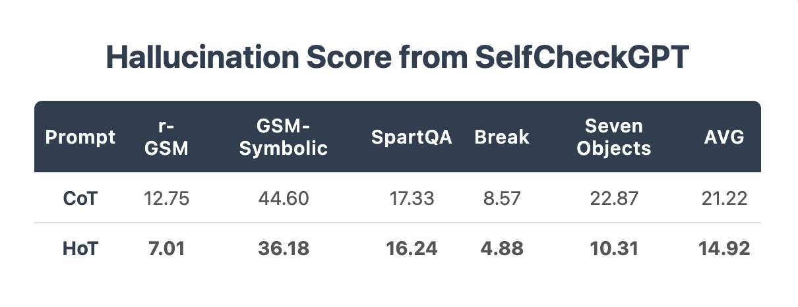
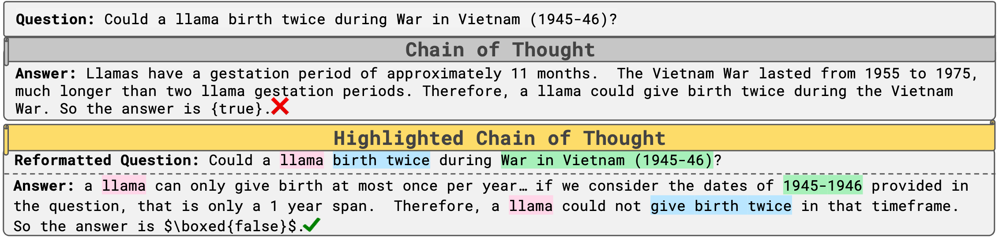
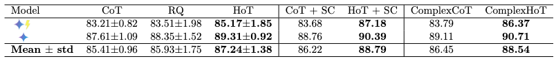
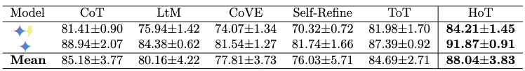

HoT: Highlighted Chain of Thought for Referencing Supporting Facts from Inputs
HoT: Highlighted Chain of Thought for Referencing Supporting Facts from Inputs
Tin Nguyen1,*,
Logan Bolton1,*,
Mohammad Reza Taesiri2,
Trung Bui3,
Anh Totti Nguyen1
*Equal contribution
1Auburn University, 2University of Alberta, 3Adobe Research

CoT and HoT (ours) responses for a MATH500 question in ReasoningTrap benchmarks, both generated by  . Left: With CoT prompting, the LLM misses the provided facts $a=10, b=c=d=0$, resulting in an incorrect answer. Right: With HoT prompting, the model highlights the key constraint $b=c=d=0$ and plugs it into the expression $ab^2c^3d^4$ to produce the correct answer of 0.
. Left: With CoT prompting, the LLM misses the provided facts $a=10, b=c=d=0$, resulting in an incorrect answer. Right: With HoT prompting, the model highlights the key constraint $b=c=d=0$ and plugs it into the expression $ab^2c^3d^4$ to produce the correct answer of 0.

Left: After finetuned via SFT on CoT examples, Qwen-2.5-1.5B answers incorrectly an adversarial question from PuzzleTrivial as it does not factor in the key fact of permanently infertile lions.
Right:
In contrast, HoT-finetuned counterpart LLM can highlight facts and answer correctly using the fact the lions would never reproduce.
📜 Abstract
An Achilles heel of Large Language Models (LLMs) is their tendency to hallucinate non-factual statements. A response mixed of factual and non-factual statements poses a challenge for humans to verify and accurately base their decisions on. To combat this problem, we propose Highlighted Chain of Thought Prompting (HoT), a technique for prompting LLMs to generate responses with XML tags that ground facts to those provided in the query. That is, given an input question, LLMs would first re-format the question to add XML tags highlighting key facts, and then, generate a response with highlights over the facts referenced from the input. Interestingly, in fewshot settings, HoT outperforms vanilla chain of thought prompting (CoT) (Wei et al., 2022) on a wide range of 22 tasks from arithmetic, reading comprehension to logical reasoning. We also test how much highlights help users detect when LLMs are correct. As expected, they help time-limited human participants to more accurately and efficiently recognize when LLMs are correct. However, interestingly, when LLMs are wrong, HoTs tend to fool users into believing that an answer is correct.
Recipe to make these highlights?
To prompt LLMs to generate HoTs, we create the 8-shot demonstration examples (which are CoT demonstrations but with XML tags) would show LLMs how to insert tags and answer questions. Second, the HoT instruction would be a short, explicit request that asks LLMs to insert tags into questions and answer it.

LLMs generate HoT responses by wrapping XML tags around the information that the model determines is the most important. Regex and CSS are then used to add color highlighting for the user to easily understand the response.

HoT demonstrates consistent accuracy improvements over CoT across QA tasks (StrategyQA, SpartQA, Date) and Reading Comprehension tasks (DROP (Break) and DROP (Census)). The largest gains are observed in StrategyQA (+15.07 for Llama-3.1-70B  ) and SpartQA (+11.88 for Gemini-1.5-Flash ).
) and SpartQA (+11.88 for Gemini-1.5-Flash ).
HoT helps users to read Long Context Questions easier
LLMs are great at answering a wide variety of questions, but it can be annoying to read through the huge blocks of text that they tend to generate. Humans frequently add color highlighting to our writing to make it easier to read, so why not allow LLMs to do the same thing?
Which of these two responses are easier to read?
(Left) CoT: you have to parse through all the irrelevant context to find the part of the conversation that you care about. (Right) HoT: you can almost instantly scan over the LLM response to see exactly where it drew its answer from.
How does this affect the user experience?
We find that HoT helps time-limited human participants to more accurately and efficiently recognize when LLMs are correct. However, when LLMs are wrong, HoT responses tend to fool users into believing that an answer is actually correct.
| Prompt |
Avg Time
(seconds) |
Verification Accuracy for
Correct LLM Responses ✓ |
Verification Accuracy for
Incorrect LLM Responses ✗ |
| HoT |
47.26 |
84.48% ± 20.28% |
54.83% ± 30.13% |
| CoT |
62.38 |
78.82% ± 28.26% |
72.21% ± 21.99% |
HoT reduces hallucinations compared to CoT
HoT prompting makes LLMs, here , hallucinates consistently less over a diverse set of tasks.
Table shows the SelfCheckGPT hallucination scores.
Lower is better.

An example of a question and answer from StrategyQA, where CoT hallucinates the fact "Vietnam War lasted from 1955 to 1975" whereas HoT detects the fact within the question that "War in Vietnam (1945-46)".

HoT outperforms other advanced prompting techniques
Over 5 runs across 22 benchmarks, HoT consistently outperforms both CoT and Repeating Questions (RQ), and even CoT + Self-Consistency (SC), and ComplexCoT.
HoT and HoT + SC also outperforms their counterparts (ComplexCoT and CoT + SC) showing that HoT can complement these methods.

On average over 5 runs and 3 datasets, HoT alone is still the most performing method compared to all other advanced prompting methods of CoT, LtM, CoVE, Self-Refine, and ToT. Under other prompting techniques, we observe LLMs often miss critical facts (e.g., overlooking temporal indicators like "yesterday" in Date), causing incorrect answers.
In contrast, LLMs tend to focus better on key facts under HoT prompting.

 ), Gemini-1.5-Flash (
), Gemini-1.5-Flash ( ) and GPT-4o (
) and GPT-4o ( ).
).